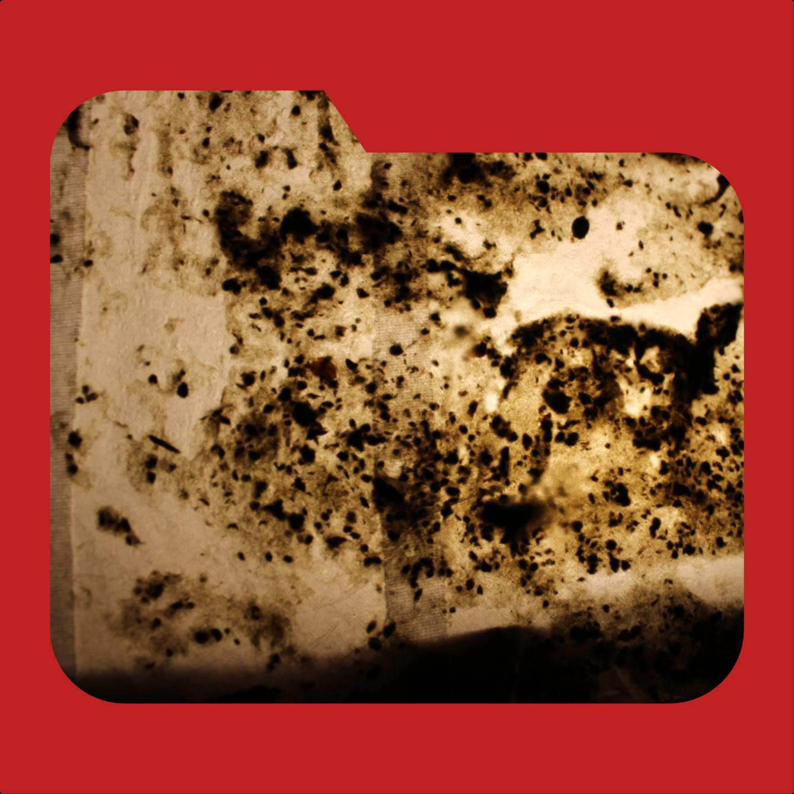
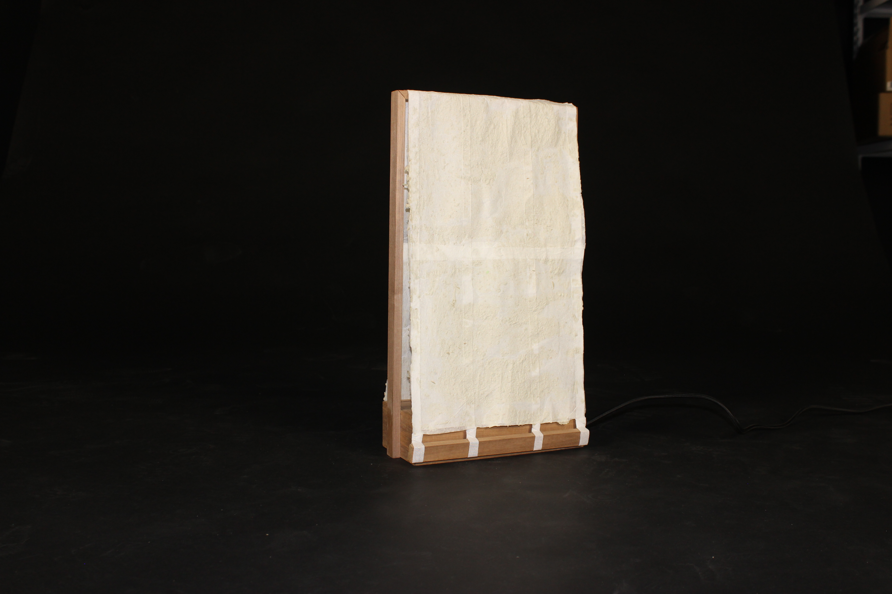
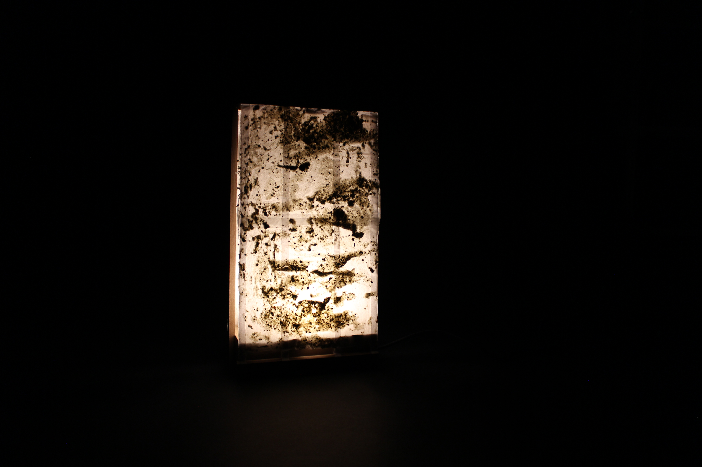
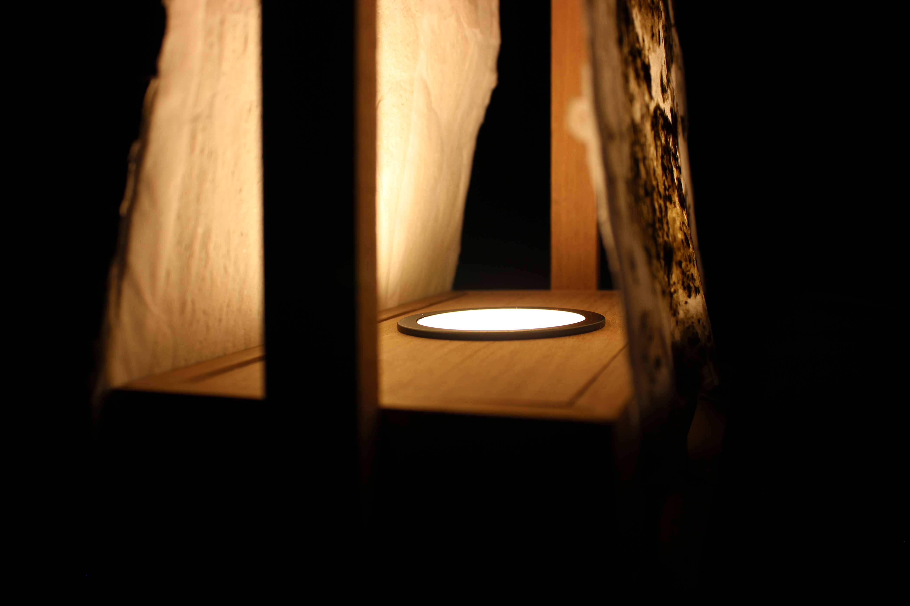

SOBRE EL PROYECTO
Washi es una investigación centrada en la creación de superficies experimentales mediante técnicas manuales de construcción por capas.
El proyecto explora las posibilidades expresivas de materiales sencillos como papel, tela, agua y cola blanca, desarrollando un proceso repetitivo de superposición capaz de generar volumen, textura y resistencia.
A través de la experimentación material se obtiene una superficie con identidad propia, situada entre el diseño, la artesanía y la investigación técnica.
ENTREGABLES
- Investigación material
- Muestras físicas
- Documentación del proceso
- Experimentación técnica
- Registro fotográfico



